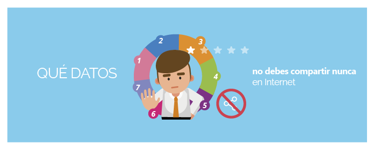
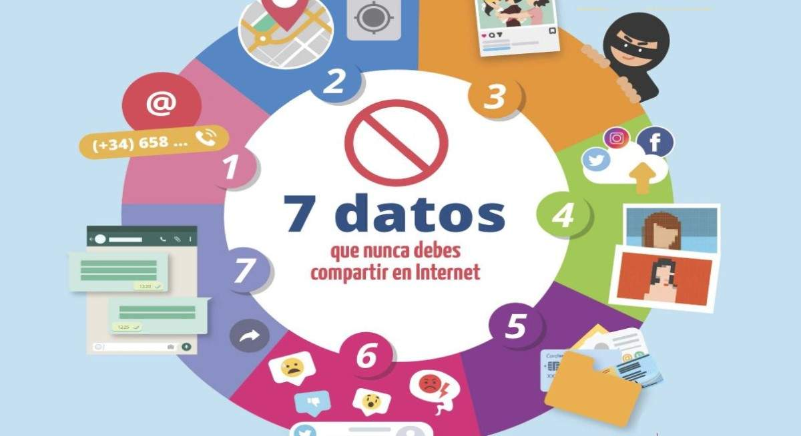

Cpompartir información en redes sociales y otras plataformas online se ha convertido en una práctica habitual y natural para muchos de nosotros: con frecuencia publicamos fotos, estados o detalles de nuestra vida cotidiana a través de redes sociales que nos permiten conectarnos con amigos y familiares, compartir momentos especiales y descubrir nuevas ideas.
Sin embargo, esta costumbre puede poner en riesgo nuestra privacidad y seguridad si nuestros datos personales caen en manos de ciberdelincuentes que los utilizan para cometer fraudes, suplantación de identidad y otros delitos. Por tanto, ser conscientes de los peligros y tomar medidas para proteger nuestros datos nos permitirá disfrutar de la tecnología sin poner en peligro nuestra privacidad y reputación.
Recopilamos los datos personales que, nos recuerdan desde Incibe y la Oficina de Seguridad del Internauta (OSI) no deberías compartir nunca en Internet, junto con las razones y nuestras recomendaciones para mantenerlos protegidos. Entender la importancia de cada uno te ayudará a estar mejor preparado para abordar los riesgos.
Correo electrónico y número de teléfono
Aunque utilizamos nuestro correo y teléfono para registrarnos en plataformas online, compartirlos abiertamente puede exponernos a riesgos como el spam, el phishing (correos engañosos y fraudulentos) y otros ataques basados en ingeniería social. Los ciberdelincuentes pueden usar esta información para acceder a cuentas personales o suplantarnos.
Usa cuentas de correo secundarias para registros y evita compartir públicamente tu número de teléfono, fijo o móvil.
Dirección post y ubicación geográfica
Compartir tu ubicación en tiempo real o la dirección de tu casa puede ponerte en peligro, especialmente si alguien con malas intenciones sabe dónde vives o cuándo no estás en casa; por ejemplo, a través de un mensaje 'fuera de la oficina’.
Desactiva la geolocalización en redes sociales y evita publicar información que pueda revelar patrones de tu rutina diaria.
Fotos de menores
Subir fotos de menores, ya sea de tus hijos o familiares, es un riesgo grave. Estas imágenes pueden acabar en manos equivocadas o ser utilizadas sin tu consentimiento.
Evalúa cuidadosamente antes de compartir imágenes de menores en redes sociales y verificar su uso en centros educativos. Si decides hacerlo, asegúrate de que tus configuraciones de privacidad sean estrictas.
Fotos comprometedoras
El sexting o compartir imágenes personales puede ser peligroso. Estas imágenes podrían ser utilizadas en delitos como la sextorsión o el ciberacoso.
Nunca compartas fotos íntimas, ni siquiera con personas de confianza. Una vez publicadas, pierdes el control sobre ellas.
Documentos personales
Tu DNI, contratos laborales o información bancaria son objetivos claros para los ciberdelincuentes. Con estos datos pueden realizar suplantaciones de identidad o fraudes financieros.
Protege esta información y evita subirla a la nube sin cifrarla.
Opiniones, quejas y comentarios comprometidos
nternet es un espacio para expresarse, pero un comentario fuera de tono puede tener repercusiones negativas. Podrías generar conflictos, dañar tu reputación o incluso ser víctima de acoso online.
Párate a pensar antes de publicar. Un mensaje puede ser malinterpretado y tener consecuencias inesperadas.
Conversaciones privadas
Las conversaciones privadas contienen información sensible que no debe ser expuesta en ningún caso. Si las compartes, podrías poner en riesgo la privacidad de otras personas y la tuya propia.
Utiliza apps de mensajería seguras y evita enviar datos personales sensibles a través de chats.
Acceso seguro a internet y a redes sociales
- Configura la privacidad de tus redes sociales: limita quién puede ver tus publicaciones y acceder a tu perfil.
- Utiliza contraseñas seguras y únicas: cambia tus contraseñas con regularidad y evita
- Ten cuidado con enlaces sospechosos: verifica siempre el origen de los correos y mensajes antes de hacer clic en un enlace
- Consulta con expertos en ciberseguridad: si tienes dudas, recurre a recursos de confianza como como Incibe y la OSI.
Conclusión
Internet ha transformado la forma en que nos comunicamos, trabajamos y disfrutamos del ocio. Sin embargo, también ha traído consigo desafíos que requieren de nuestra atención y responsabilidad.
Desde fotos comprometedoras hasta documentos personales y opiniones, cada dato que compartimos puede tener repercusiones serias si no tomamos las precauciones adecuadas. Por tanto, ser consciente de los peligros que conlleva esa exposición de nuestra información, prevenir y proteger tu información personal y evitar compartir datos que puedan ponerte en riesgo es un fundamental para disfrutar de un entorno digital seguro.
  volver a la pagina principal